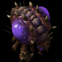
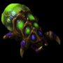
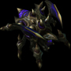
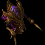
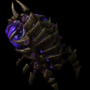
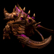

基础数据
- 生命值: 40 能量值: 0
- 生产信息:
 50
0
50
0
 1
12
1
12
- 变异自:幼虫
- 热键:D
- 单位类型:轻甲 - 生物
- 护甲:0
- 移动速度:3.94
- 运输占位:1
武器:利爪

- 伤害:5
- 射程:近战
- 射速:1.07
- 目标:对地
技能:潜地
- 热键：R
- 引导时间：1s
- 需要：进化潜地
- 使单位潜入地下，但无法攻击或移动，潜入地下的单位被判定为隐形。
技能:采集

- 热键：G
- 命令工蜂采集晶体矿和瓦斯资源

基础数据
- 生命值: 200 能量值: 0
- 生产信息:
100
0
0
18
- 变异自:幼虫
- 热键:V
- 单位类型:重甲 - 生物
- 护甲:0
- 移动速度:0.902
- 运输占位:1
技能:变异为眼虫
- 热键：V
- 需要时间：12s
- 消耗：50晶体矿+50瓦斯
- 需要：虫穴
- 使王虫变异为眼虫
技能:排放菌毯
- 热键：G
- 持续时间：11s
- 使王虫在目标位置停止移动并排放菌毯
技能:开启腹囊

- 热键：T
- 消耗：25晶体矿+25瓦斯
- 需要：虫穴
- 使王虫获得运输功能
技能:装载

- 热键：L
- 需要：开启腹囊
- 将异虫地面单位装载进王虫

基础数据
- 生命值: 35 能量值: 0
- 生产信息:
25
0
0.5
17
- 变异自:幼虫（需要：分裂池）
- 热键:Z
- 单位类型:轻甲 - 生物
- 护甲:0 - 异虫地面甲壳
- 移动速度:4.13/5.37
- 运输占位:1
武器:利爪
- 伤害:5
- 射程:近战
- 射速:0.5
- 目标:对地
技能:潜地
- 热键：R
- 引导时间：1s
- 需要：进化潜地
- 使单位潜入地下，但无法攻击或移动，潜入地下的单位被判定为隐形。
技能:变异为爆虫
- 
- 热键：E
- 需要时间：14s
- 消耗：25晶体矿+25瓦斯
- 需要：爆虫巢穴
- 使跳虫变异为爆虫

基础数据
- 生命值: 175 能量值: 25/200
- 生产信息:
150
0
2
36
- 训练自:孵化场/虫穴/主巢（需要：分裂池）
- 热键:Q
- 单位类型:生物 - 灵能
- 护甲:1 - 异虫地面甲壳
- 移动速度:1.31/3.5
- 运输占位:1
武器:利爪
- 伤害:4
- 射程:5
- 射速:0.71
- 目标:对地
武器:强酸脊刺
- 伤害:9
- 射程:8
- 射速:0.71
- 目标:对空
技能:潜地
- 热键：R
- 引导时间：1s
- 需要：进化潜地
- 使单位潜入地下，但无法攻击或移动，潜入地下的单位被判定为隐形。
技能:孵化幼虫
- 热键：V
- CD：1.8s
- 持续时间：29s
- 消耗：25
- 使目标孵化场、虫穴或主巢在29秒内孵化出额外的3只幼虫。如果目标建筑已经有多余3只的幼虫，平常的幼虫生产将会在幼虫数量少于3只前暂停。
技能:哺液
- 热键：T
- CD：1s
- 消耗：50
- 立即恢复目标生物类兵种或建筑75点生命值，并在接下来7秒内持续恢复50点生命值
技能:产下菌毯肿瘤
- 热键：T
- CD：1s
- 消耗：50
- 持续时间：11s
- 一种潜地菌毯分泌腺体。每个菌毯肿瘤都可以在范围10内分裂出另一个菌毯肿瘤，

基础数据
- 生命值: 145 能量值: 0
- 生产信息:
75
25
2
19
- 变异自:幼虫（需要：蟑螂温室）
- 热键:R
- 单位类型:生物 - 重甲
- 护甲:1 - 异虫地面甲壳
- 移动速度:3.15/4.09
- 运输占位:2
武器:酸性唾液

- 伤害:16
- 射程:4
- 射速:1.43
- 目标:对地
技能:潜地
- 热键：R
- 引导时间：1s
- 需要：进化潜地
- 使单位潜入地下，但无法攻击或移动，潜入地下的单位被判定为隐形。
技能:变异为破坏者
- 热键：V
- 持续时间：9s
- 消耗：25晶体矿+75瓦斯+1补给
- 使蟑螂变异为破坏者
技能:极速再生

- 被动技能
- 掘地状态下的蟑螂生命回复速度非常迅速（7生命值每秒）。
基础数据
- 生命值: 30 能量值: 0
- 生产信息:
25
25
0.5
14
- 变异自:跳虫（需要：爆虫巢穴）
- 热键:E
- 单位类型:生物
- 护甲:0 - 异虫地面甲壳
- 移动速度:3.5/4.55
- 运输占位:2
武器:酸性唾液
- 伤害:16
- 射程:4
- 射速:1.43
- 目标:对地
技能:潜地
- 热键：R
- 引导时间：1s
- 需要：进化潜地
- 使单位潜入地下，但无法攻击或移动，潜入地下的单位被判定为隐形。
技能:爆炸
- 热键：X
- 就地爆炸，对附近的敌方单位和建筑造成伤害。
技能:开启攻击建筑
- 热键：F
- 开启后自动施放
- 伤害：80
- 使爆虫可以将建筑选为攻击目标

基础数据
- 生命值: 200 能量值: 50/200
- 生产信息:
50
50
0
12
- 变异自:王虫（需要：虫穴）
- 热键:V
- 单位类型:生物 - 灵能
- 护甲:1 - 异虫飞行生物甲壳
- 移动速度:2.62
技能:污染
- 热键：E
- 消耗：125
- 使目标建筑在21秒内无法生产单位或研究升级
技能:孵化拟态雏虫
- 热键：C
- 消耗：50
- 持续时间：150
- 孵化一个拟态雏虫。拟态雏虫不可攻击，仅能存在150秒。在它第一次接触到一个敌方单位时，拟态雏虫会将自己的颜色变为对方的颜色，并根据对方的种族变为狂热者、陆战队员或跳虫的外观。
技能:超距视界
- 热键：W
- 提升25%的视野，但不可移动。
技能:侦测单位
- 侦测器可以发现隐形、幻象、潜地单位

基础数据
- 生命值: 90 能量值: 0
- 生产信息:
100
50
2
24
- 变异自:幼虫（需要：刺蛇巢）
- 热键:H
- 单位类型:生物 - 轻甲
- 护甲:0 - 异虫地面单位甲壳
- 移动速度:3.15/4.09
- 运输占位：2
武器:骨针

- 伤害:12
- 射程:5
- 射速:0.59
- 目标:对地，对空
技能:潜地
- 热键：R
- 引导时间：1s
- 需要：进化潜地
- 使单位潜入地下，但无法攻击或移动，潜入地下的单位被判定为隐形。
技能:变异为潜伏者
- 热键：E
- 消耗：50晶体矿+100瓦斯
- 持续时间：15s
- 使刺蛇变异为潜伏者
基础数据
- 生命值: 200 能量值: 0
- 生产信息:
50
100
1
18
- 变异自：刺蛇（需要：巨型尖塔）
- 热键：E
- 单位类型：生物 - 重甲
- 护甲：1 - 异虫地面单位甲壳
- 移动速度：4.13/5.37
武器:脊刺
- 伤害:20（重甲：30）
- 射程:9
- 射速:1.43
- 目标:对地

基础数据
- 生命值: 90 能量值: 50/200
- 生产信息:
100
150
2
36
- 变异自:幼虫（需要：感染深渊）
- 热键:F
- 单位类型:重甲 - 生物 - 灵能
- 护甲:0 - 异虫地面甲壳
- 移动速度:3.15/4.09
- 运输占位:2
技能:潜地
- 热键：R
- 引导时间：1s
- 需要：进化潜地
- 使单位潜入地下，但无法攻击或移动，潜入地下的单位被判定为隐形。
技能:潜地移动
- 被动技能
- 感染者可以在潜地时移动
技能:受感染的人类
- 热键：T
- 持续时间：21s
- 消耗：25
- 孵化1个受感染的人类。受感染的人类仅能存在21秒。
技能:神经寄生

- 热键：E
- 持续时间：11s
- 消耗：100
- 需要：在感染深渊研究“神经寄生”
- 控制目标单位，持续11秒或离开有效距离。感染者在进行控制时无法执行其他指令。
技能:霉菌滋生
- 热键：F
- 持续时间：3s
- 消耗：75
- 伤害：30
- 缠绕目标区域内的敌方单位，令其无法闪现、战术跳跃、进入装载物或建筑，并受到持续伤害和降低75%的移动速度，持续3秒。被命中的隐形和掘地状态单位会显形

基础数据
- 生命值: 120 能量值: 0
- 生产信息:
100
100
2
24
- 变异自:幼虫（需要：尖塔）
- 热键:T
- 单位类型:生物 - 轻甲
- 护甲:0 - 异虫飞行生物甲壳
- 移动速度:5.6
- 运输占位：2
武器:刃虫

- 伤害:9
- 射程:3
- 射速:1.09
- 目标:对地，对空
技能:组织再生
- 被动技能
- 异龙每秒恢复1.4点生命值

基础数据
- 生命值: 200 能量值: 0
- 生产信息:
150
100
2
29
- 变异自：幼虫（需要：尖塔）
- 热键：C
- 单位类型：生物 - 重甲
- 护甲：2 - 异虫飞行生物甲壳
- 移动速度：4.725
- 运输占位：2
武器:寄生孢子

- 伤害:14（重甲：20）
- 射程:6
- 射速:1.36
- 目标:对空
技能:强酸腐蚀
- 需要引导
- 喷出一股强酸，每秒造成7点伤害，持续4.3秒，然后每秒造成35点伤害。仅作用于建筑
技能:变异为巢虫领主
- 热键：B
- 需要时间：24s
- 消耗：150晶体矿+150瓦斯+2补给
- 使腐化者变异为巢虫领主。

基础数据
- 生命值: 300 能量值: 0
- 生产信息:
50
50
0
14
- 需要：虫道网络
- 热键：N
- 单位类型：生物 - 重甲 - 建筑
- 护甲：1 - 异虫地面单位甲壳
技能:装载
- 热键：L
- 将异虫地面单位装载进坑道虫

基础数据
- 生命值: 500 能量值: 0
- 生产信息:
300
200
6
29
- 变异自：幼虫（需要：雷兽窟）
- 热键：U
- 单位类型：生物 - 重甲 - 重型
- 护甲：2 - 异虫地面单位甲壳
- 移动速度：4.13/5.37
- 运输占位：8
武器:巨刃
- 伤害:35
- 射程:1
- 射速:0.61
- 目标:对地
技能:狂暴
- 被动技能
- 免疫减速、昏迷、精神控制和位移效果
技能:潜地
- 热键：R
- 引导时间：1s
- 需要：进化潜地
- 使单位潜入地下，但无法攻击或移动，潜入地下的单位被判定为隐形。
基础数据
- 生命值: 225 能量值: 0
- 生产信息:
150
150
2
24
- 变异自：腐化者（需要：巨型尖塔）
- 热键：B
- 单位类型：生物 - 重甲 - 重型
- 护甲：1 - 异虫飞行生物甲壳
- 移动速度：4.13/5.37
武器:巢虫侵袭
- 伤害:20
- 射程:10
- 射速:1.79
- 目标:对地